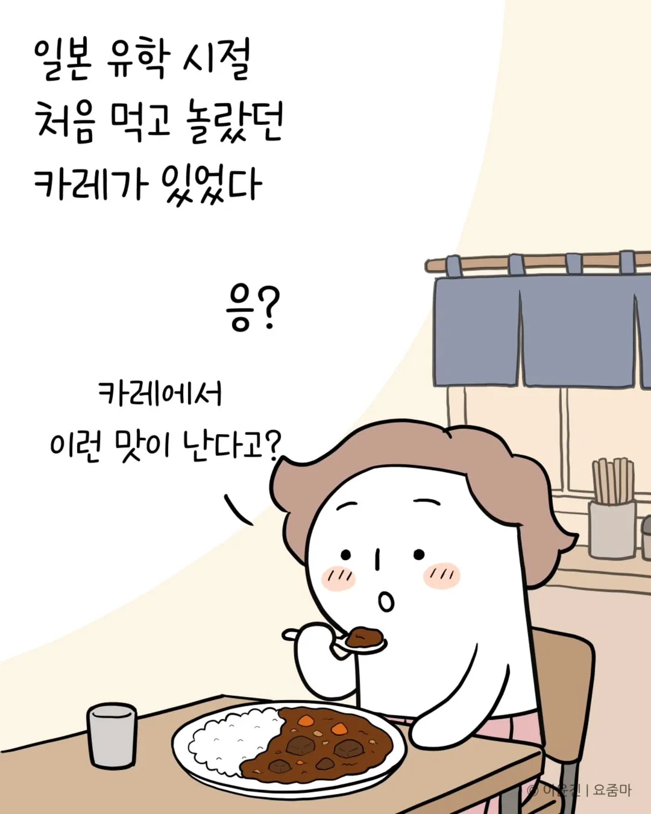
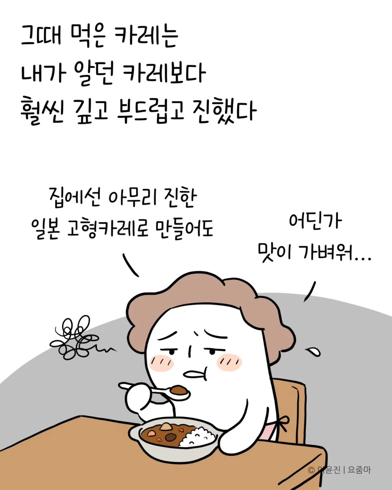
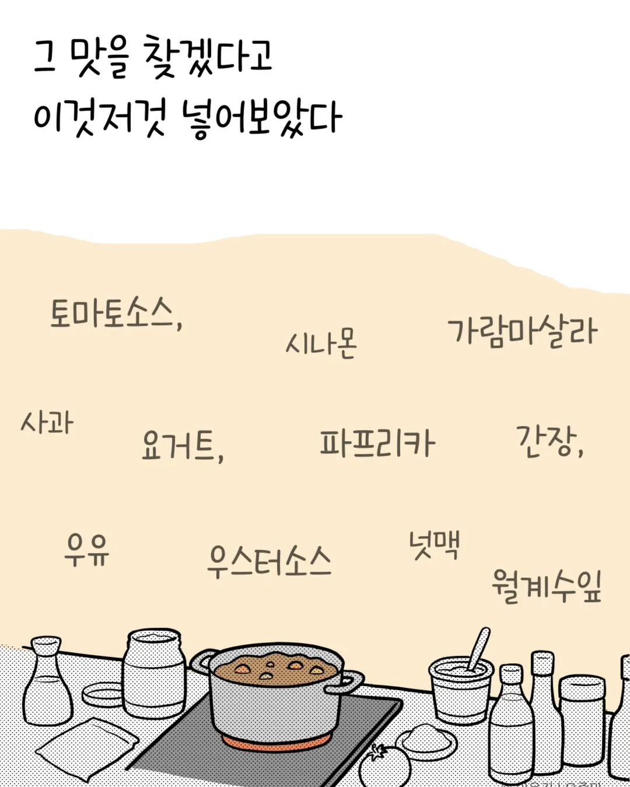
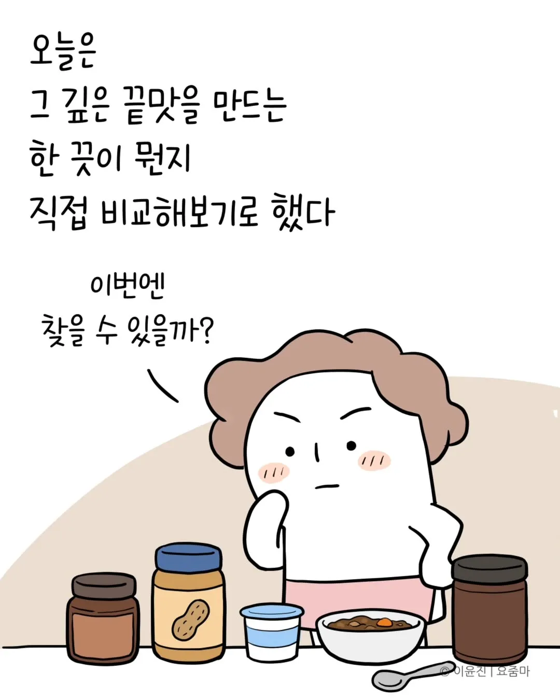
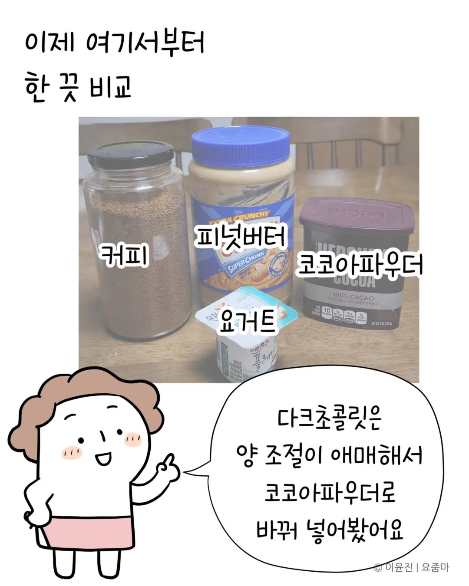
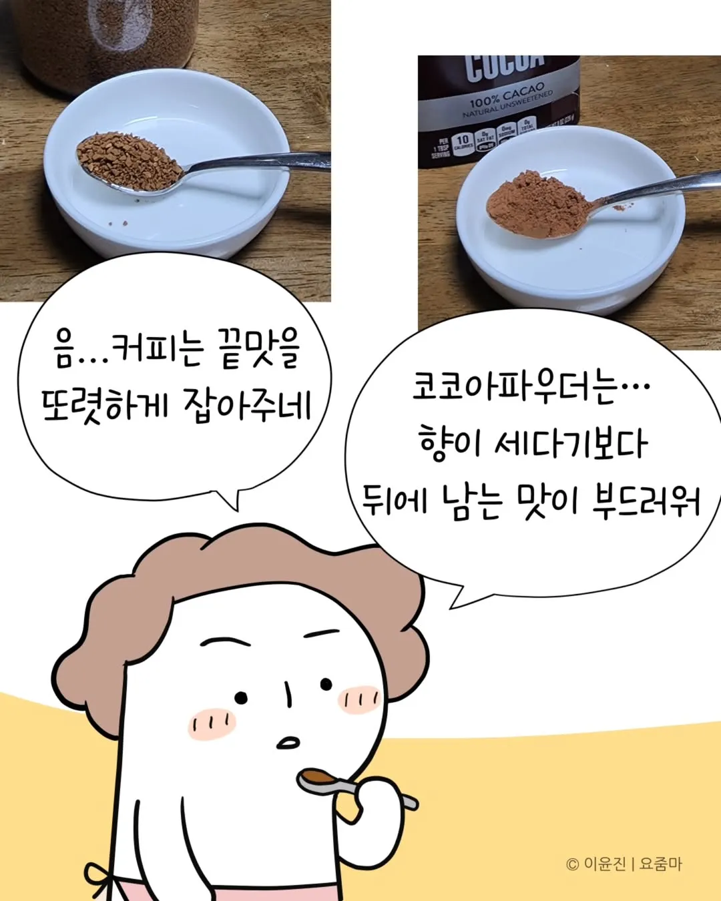
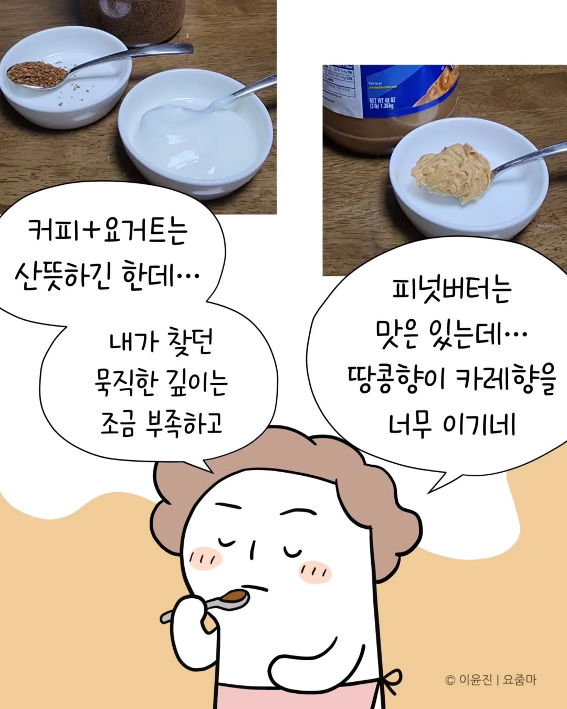
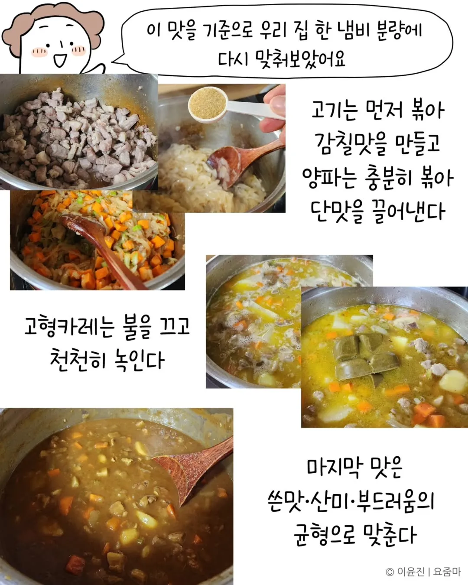
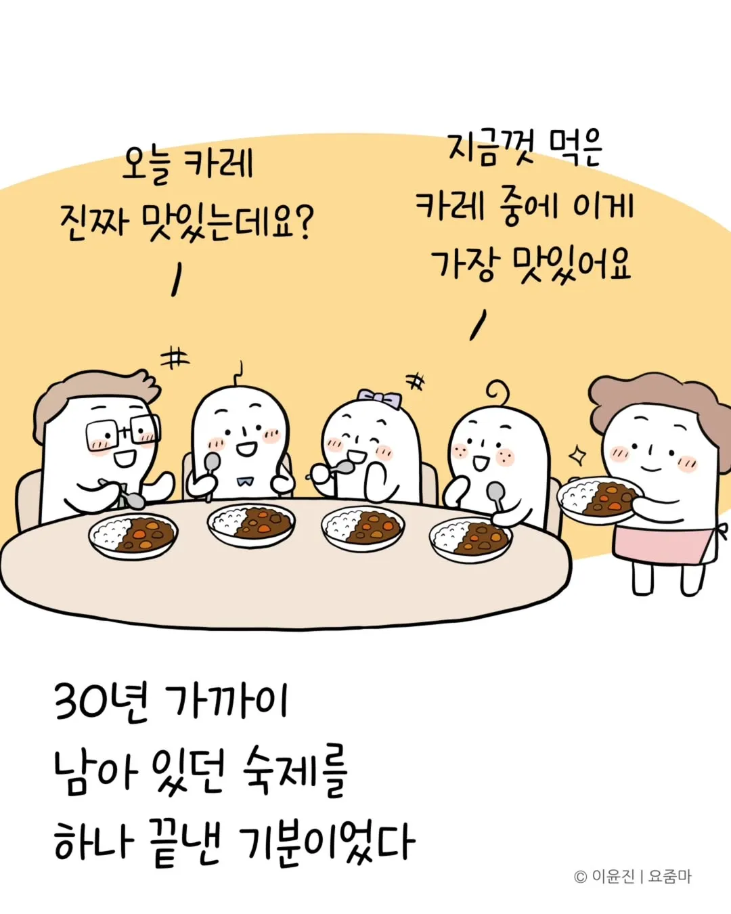
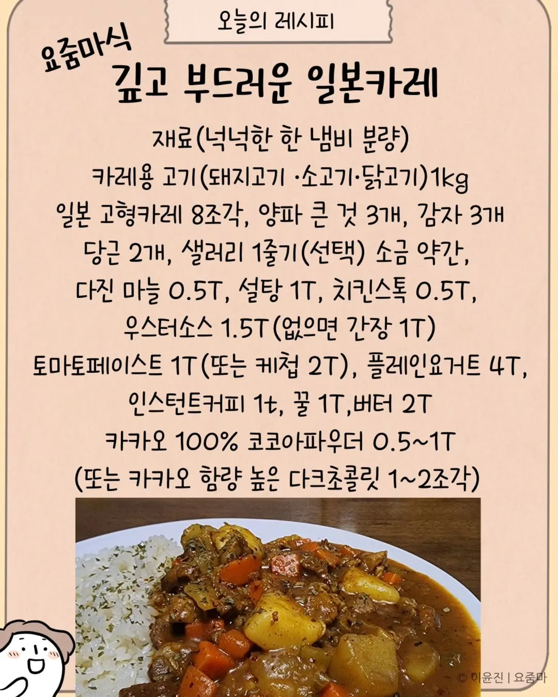
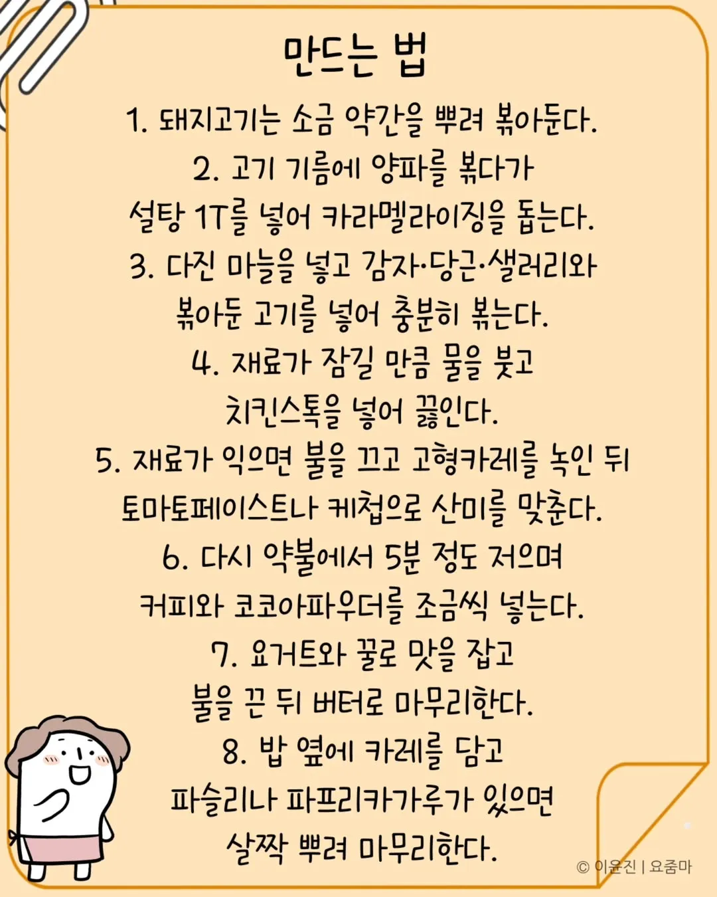











저런 스튜형 요리는 또 대량으로 만들어야 맛있기도 하다던데 ㅋㅋ
평생 보지 않을 레시피 와드
한 30년뒤에 가정용로봇 집집 마다 보급되면 해달라하면됨
이것이 끝이 아니다
어묵을 넣는다
일일외출록 반장 생각나네
풍덩
디너카레 ㅇㄷ?
디너카레 맛있다던데 양많고 비싸서 못사겠음
냉동실밀봉보관
디너카레 사서 해먹었는데 조금 더 맛있을 뿐임. 디너카레 가격이 오뚜기카레 5봉지 가격보다 더 비쌈
정확히는 향신료가 좀 더 다양하게 들어가서 복합적인 향이 좀 더 남
근데 먹으면서 이 돈이면 씨... 이 생각이 자꾸 나더라
절대미각이네
남자의 고집있는 카레
아 커피만 아니면 해서 먹어보고 싶은데 ㅠㅠㅠㅠ
카레에 요거트가 들어간다고/ 충격인데 나 요알못이긴한데
카레에 요거트 근본임
카레가 은근 이런저런 재료 다 잘받아먹음 요거트도 잇고 본문은 카카오카루지만 그냥 밀크초콜렛넣어도 나쁘지않고.. 인도가 원류인만큼 향신료를 많이 넣는 요리라 그런가 인도카레는 종류도 엄청많고 다양함
커리가 원래 향신료 종류 중에 하나임. 향신료 조합에 따라 다르긴 한데 보통 뭉탱이로 조합해놓은 걸 마샬라라고 함.
한국으로 따지면 국 끓일 때 넣을 목적으로 고추-파-마늘-생강-겨자-산초-후추-깻잎-고수를 일정 비율로 조합해둔 양념 덩어리(집마다, 사람마다, 가게마다 비율이 다름)를 마샬라라고 지칭하는 거라고 생각하면 편함
그럼 그 향신료 덩어리 특이 뭐겠냐? 맵고 쓰잖냐.. 그래서 맵고 쓴 특징 없앨려고 현지에서도 이것저것 넣어서 맛을 중화시키는 데 그 중 대표적인 게 바로 버터와 크림이 들어간 치킨 마크니, 요구르트와 크림 등등이 들어간 코리마, 토마토와 닭고기를 넣은 치킨 커리 등등이 있음
인도에서도 넣는 것 같던데
카레 한번 저렇게 해 묵어봐야게따
카레에 카누스틱 1개만 넣어도 맛있음
카레는 카레여왕이 짱이다
고기 넣지말고 야채 종류별로 최대한 많이 넣은 다음에
오뚜기든 카레여왕이든 일본카레든
살짝 묽게 끓여봐라 진짜 국밥보다 더 시원함
그게 스프카레
스프는 오히려 고기+육수일걸
고기 절대 ㄴㄴㄴㄴㄴ 덜 시원함
카레에 친수소스<<<이거 대박이더라 어디 카렛집 비결이라던데 친수가 고추랑 토마토 페이스트 발효시킨거라는데 적당한 산미 발효 감칠맛 매운맛 다 섞여서 개 맛있음
치킨스톡만 넣어도 충분함
이거 올라올때마다 보는데 댓글로 자기 레시피 공유하는 사람들 귀여움
오우.. 감사하뮤.. 30년간이나 ㄷㄷ
스크랩 기능이 없는게 아쉽네
첨부파일 밑에 있다
ㅇㄷ
카레 전문가로서 저런 일본 카레 맛의 기본이라면 양파카라멜라이징에 버터를 이렇게 써도 되나 싶을 정도로 넣고 이렇게 오래 볶아도 되나 싶을 정도로 볶는 것
존나 귀찮아서 안해먹을거 같지만 혹시 몰라 와드
카레에 어묵을 넣지말라는 법이 있을까?
카레 와드
대량으로 만드는게 아니면 조절이 어렵네 ㅠㅠ